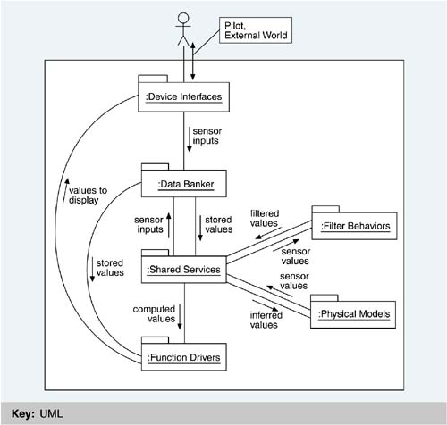

| [ Team LiB ] |
|
3.4 SummaryThis chapter described the architecture of a highly capable avionics system in terms of three related but quite different structures. A module decomposition structure describes design-time relations among its components, which are implementation units that can be assigned to teams. A uses structure describes runtime usage relations among its components, which are procedures in modules. From it, a picture of a layered architecture emerges. The process structure describes the parallelism of the system and is the basis for assignment for the physical hardware. It is critical to design each structure correctly because each is the key to a different quality attribute: ease of change, ease of extracting a subset, and increased parallelism and performance. It is also critical to document each structure completely because the information about each is duplicated in no other place. Even though the structures are orthogonal, they are related, in that modules contain procedures, which use each other and are strung together in processes. Other architectural structures could have been specified for this system. One, a data flow view (a component-and-connector view additional to those introduced in Chapter 2), would have looked something like the one in Figure 3.5. All data comes from the external world via the Device Interface modules and works its way through computation and storage modules to the Function Driver modules, which compute output values to send back to the devices. The A-7E designers never thought data flow views were useful—what quality attribute do they help achieve that the others do not?—but other designers might feel different. The point—and the lesson—about architectural views is that they should enhance understanding of and intellectual control over the system and its attributes. If a view meets these conditions, it is probably one you will want to pay attention to. Figure 3.5. Coarse-grained data flow view for the A-7E software We also presented the architecture in terms of the qualities the designers wished to achieve: changeability and understandability. This leads us to the thesis that we explore in the next two chapters: Architectures reflect a set of desired qualities. |
| [ Team LiB ] |
|